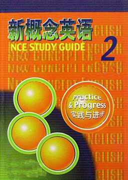

新概念英语2 (New Concept English 2)
作者：路易·亚历山大 (Louis·Alexander) [英国]
构建英语的基石，在掌握一册语法知识的基础上，由浅入深、逐步讲解语法要点，使你轻松掌握枯燥的语法；通过对句型想方设法的分析及对词汇、短语的讲解，使你在听、说、读中能真正运用地道的句型。掌握后，可以参加高考一类考试。
难度：
高中
长度：
短篇
分类：
社会
第1课: 私人谈话 A private conversation
第2课: 早餐还是午餐？ Breakfast or lunch?
第3课: 请给我寄一张明信片 Please send me a card
第4课: 激动人心的旅行 An exciting trip
第5课: 无错号 No wrong numbers
第6课: 珀西·巴顿斯 Percy Buttons
第7课: 为时太晚 Too late
第8课: 最好的和最差的 The best and the worst
第9课: 冷遇 A cold welcome
第10课: 不适于演奏爵士乐 Not for jazz
第11课: 礼尚往来 One good turn deserves another
第12课: 再见，一路顺风 Goodbye and good luck
第13课: 绿林少年 The Greenwood Boys
第14课: 你会讲英语吗？ Do you speak English?
第15课: 佳音 Good news
第16课: 彬彬有礼的要求 A polite request
第17课: 青春常驻 Always young
第18课: 他经常干这种事！ He often does this!
第19课: 票已售完 Sold out
第20课: 独坐孤舟 One man in a boat
第21课: 是不是疯了？ Mad or not?
第22课: 玻璃信封 A glass envelope
第23课: 新居 A new house
第24课: 不幸中之万幸 It could be worse
第25课: 英国人讲的是英语吗？ Do the English speak English?
第26课: 最佳艺术评论家 The best art critics
第27课: 雨夜 A wet night
第28课: 禁止停车 No parking
第29课:出租汽车！ Taxi!
第30课: 足球还是水球？ Football or polo?
第31课: 成功者的故事 Success story
第32课: 购物变得很方便 Shopping made easy
第33课: 冲出黑暗 Out of the darkness
第34课: 破案“神速” Quick work
第35课: 捉贼！ Stop thief!
第36课: 横渡海峡 Across the Channel
第37课: 奥林匹克运动会 The Olympic Games
第38课: 唯独没有考虑到天气 Everything except the weather
第39课: 我是否痊愈？ Am I all right?
第40课: 进餐与交谈 Food and talk
第41课: 你把那个叫帽子吗？ Do you call that a hat?
第42课: 并非很懂音乐 Not very musical
第43课: 飞越南极 Over the South Pole
第44课: 穿过森林 Through the forest
第45课: 问心无愧 A clear conscience
第46课: 既昂贵又受罪 Expensive and uncomfortable
第47课: 嗜酒的鬼魂 A thirsty ghost
第48课: 你想对我说什么吗？ Did you want to tell me something?
第49课: 美梦告终 The end of a dream
第50课: 乘车兜风 Taken for a ride
第51课: 对美德的奖赏 Reward for virtue
第52课: 漂亮的地毯 A pretty carpet
第53课: 触电的蛇 Hot snake
第54课: 粘糊的手指 Sticky fingers
第55课: 并非金矿 Not a gold mine
第56课: 比声音还快！ Faster than sound!
第57课: 您要买什么，夫人？ Can I help you, madam?
第58课: 是因祸得福吗？ A blessing in disguise?
第59课: 进来还是出去？ In or out?
第60课: 卜算未来 The future
第61课: 哈勃望远镜的困境 Trouble with the Hubble
第62课: 大火之后 After the fire
第63课: 她并不觉得好笑 She was not amused
第64课: 海峡隧道 The Channel Tunnel
第65课: 小象对警察 Jumbo versus the police
第66课: 像蜜一样甜！ Sweet as honey!
第67课: 火山 Volcanoes
第68课: 纠缠不休 Persistent
第69课: 并非谋杀！ But not murder!
第70课: 危险的红色 Red for danger
第71课: —个著名的大钟 A famous clock
第72课: “蓝鸟”汽车 A car called Bluebird
第73课: 纪录保持者 The record-holder
第74课: 舞台之外 Out of the limelight
第75课: 呼救信号 SOS
第76课: 愚人节 April Fools1 Day
第77课: 一例成功的手术 A successful operation
第78课: 最后一枝吗？ The last one?
第79课: 乘飞机 By air
第80课: 水晶宫 The Crystal Palace
第81课: 脱逃 Escape
第82课: 是妖还是鱼？ Monster or fish?
第83课: 大选之后 After the elections
第84课: 罢工 On strike
第85课: 活到老学到老 Never too old to learn
第86课: 失控 Out of control
第87课: 极好的不在犯罪现场的证据 A perfect alibi
第88课: 困在矿井里 Trapped in a mine
第89课: 口误 A slip of the tongue
第90课: 晚餐吃什么？ What‘s for supper?
第91课: 三人同篮 Three men in a basket
第92课: 自找麻烦 Asking for trouble
第93课: 崇高的礼物 A noble gift
第94课: 未来的冠军 Future champions
第95课: 纯属虚构 A fantasy
第96课: 亡灵返乡 The dead return